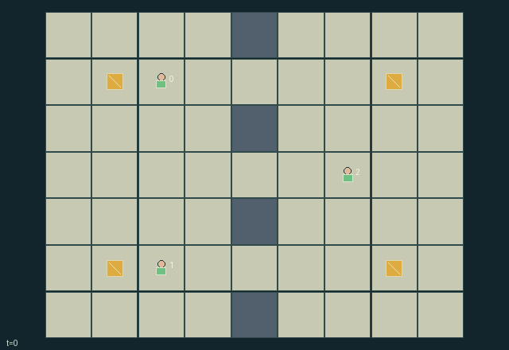

GI128 · Crossbar Couriers: Pass Before Expiry

Original recording scope: 角色视角 · Mode: 固定脚本演示
Additional generated state replay (different trajectory / full-state debug)

Carry or relay four expiring packets to their privately assigned opposite-side depots through three shared openings.
Identity and original contract
3 independently actionable roles; 13 discrete commands per role; 83 native observation columns per role; original horizon 64 steps. Declared per-step reward range: -4 to 8. Observation regime: partially_observable.
Source SHA-256: c65118d8ecf1e89844561a43cfb4963d4f32076e80d6592c0d43c0df8e652f47
The objective, rewards, population, map and horizon remain original. A preview is not a success claim.
Objective and gameplay
Carry or relay four expiring packets to their privately assigned opposite-side depots through three shared openings.
A consenting adjacent handoff transfers the sole packet slot and its destination information. Broadcast single-cell reservations deny entry to other roles for a bounded duration. Conservative simultaneous collision rules prevent swaps and create congestion. Packet sponsorship and last-handler bonuses make help compete with private delivery interests.
- Each courier has exactly one packet slot. Pick-up requires the same cell; an offer requires an empty adjacent role choosing Accept on that tick.
- An opposite-side destination is sampled privately at reset. Packet attributes are visible only locally or to their carrier.
- Reserve one neighboring road cell for three decision frames. Other roles cannot enter an active reservation, including during its creation tick.
- Old occupied courier cells cannot be entered this tick: no swaps or following into a cell just vacated. Shared target conflicts use rotating priority.
- Packets keep their identity through drops and handoffs. Arrival wins over expiry on the same tick; resolved packets release the slot.
- Delivery gives a shared quarter-point plus one point each to sponsor and final carrier. Expiry penalizes the team and sponsor.
- The scene's packet and courier visibility comes from the same masks used in observations. Only public delivery and expiry receipts appear as global events.
Ending: All four packets have been delivered or expired; otherwise truncate at 64 nonterminal steps.
What this game explores
Information, sensing & communication: Who knows a fact, when it was measured, and whether it was communicated are separate state variables. Test memory or communication using only the same role-visible evidence.
Commitment, exchange & governance: Promises consume time, liquidity, access or material. Separate an announced agreement from a binding commitment and from its eventual delivery; log cancellation and expiry too.
Joint transport & shared access: Positions, load geometry, occupancy and persistent access constrain whose action can succeed next. Distinguish physical handoff, shared controls and simultaneous force from a cosmetic cooperation label.
These are questions supported by rule structure, not observed learning effects.
Play it: operating walkthrough
crucibles play --game gi128Keep Python running and open its printed address. Select this game, set a seed and press Create session. The game itself is always English.
Assign a role range to Host with Assign / take over, or Assign all roles. Invite a second participant with Create player invitation, then assign a disjoint subset. Every original role is available.
For every owned role choose a legal command and press Queue. Arrow keys / WASD queue a declared directional action for the current role camera when available. Space or Advance one joint step advances everyone together. Non-directional games use the selectors.
Unqueued roles use the labelled untrained uniform-legal policy. Take over or release roles before the next step without resetting. Full-state debug is privileged and permanently logged; role cameras preserve permissions. Close the session to retain logs. Server restart does not restore sessions.
Complete command reference
IDs and English labels exactly match the manifest. Availability depends on role, resources, location and phase. An available action can still have no productive effect.
0·Wait
1·Move north
2·Move east
3·Move south
4·Move west
5·Pick up packet at own cell
6·Offer carried packet to adjacent accepting role
7·Accept an adjacent offered packet
8·Reserve north cell
9·Reserve east cell
10·Reserve south cell
11·Reserve west cell
12·Drop carried packet
Roles and capability identifiers
These original role names describe capabilities, not interchangeable skins. Check each owned role's legal selector before planning handoffs.
agent_0·Upper west courier and sponsor
agent_1·Lower west courier and sponsor
agent_2·East courier and two-packet sponsor
Information and observation permissions
Fixed wall layout and depot identities are public. Roles observe themselves, couriers within Manhattan distance 3, and active packets within distance 2 or in their own custody. Every hidden packet value, including position, destination, timer, carrier and sponsor, is zeroed behind an explicit visible bit. Reservation locations/timers and delivery/expiry radio receipts are public. Inactive reservation positions remain public historical signals. Private handoff/pickup flags are not declared global scene events. The diagnostic full-state view must be separately labelled.
The GIF is full-state debug and may reveal hidden entities or private state. Train on obs[agent], not the picture, state tree or another role's private row. Field slices and visibility are in the original manifest.
Reinforcement-learning integration
import jax
from crucibles_jaxmarl import make
env = make("gi128")
key = jax.random.PRNGKey(0)
key, rk, ak, sk = jax.random.split(key, 4)
obs, state = jax.jit(env.reset)(rk)
actions = env.sample_actions(ak, state)
obs, state, rewards, dones, info = jax.jit(env.step_env)(sk, state, actions)
done = dones["__all__"]Observations are float32 vectors of width 83; actions are scalar int32; masks have 13 entries. Supply all 3 roles each transition. Masked sampling is an engineering reference, not a trained learner.
step_env retains terminal data without reset. step performs outer autoreset and keeps terminal data in info["raw_state"] and info["raw_observation"]. Use dones["__all__"] for episode boundaries; separate completion, failure and time limit in analysis.
JIT or vmap equal identities and shapes. Split independent reset, policy and transition keys. Group different shapes explicitly; do not shrink the population or horizon. Host rendering stays outside training.
Training questions and fair evaluation
Define valid completion from the objective before fitting. Preserve original rewards and also report real deliveries/services, losses, resource state, unresolved episodes and per-role returns. Animation is not a reward signal.
Who knows a fact, when it was measured, and whether it was communicated are separate state variables. Test memory or communication using only the same role-visible evidence.
Promises consume time, liquidity, access or material. Separate an announced agreement from a binding commitment and from its eventual delivery; log cancellation and expiry too.
Positions, load geometry, occupancy and persistent access constrain whose action can succeed next. Distinguish physical handoff, shared controls and simultaneous force from a cosmetic cooperation label.
Compare memory, communication or centralized critics under matched actor information. Declare critic access; keep actor inputs role-filtered. Match partner/opponent distributions, masks, compute and checkpoint selection. Final tests never enter fitting or selection.
Independent training runs or source-pairing blocks are inferential units; episodes from one policy are not independent training replications. Save hashes, keys, versions, device, time and cost. Negative, zero, failed and indeterminate outcomes are valid. No trained checkpoint or target score is supplied.
Classification and evidence
Overlapping editorial labels are reading aids, not proof of novelty, difficulty, strategic equivalence or learning effects.
- Information, sensing & communication
- Evidence
manifest.task.objective: Carry or relay four expiring packets to their privately assigned opposite-side depots through three shared openings.
- Evidence
manifest.task.interaction: A consenting adjacent handoff transfers the sole packet slot and its destination information. Broadcast single-cell reservations deny entry to other roles for a bounded duration. Conservative simultaneous collision rules prevent swaps and create congestion. Packet sponsorship and last-handler bonuses make help compete with private delivery interests.
- Evidence
manifest.task.observation_access: Fixed wall layout and depot identities are public. Roles observe themselves, couriers within Manhattan distance 3, and active packets within distance 2 or in their own custody. Every hidden packet value, including position, destination, timer, carrier and sponsor, is zeroed behind an explicit visible bit. Reservation locations/timers and delivery/expiry radio receipts are public. Inactive reservation positions remain public historical signals. Private handoff/pickup flags are not declared global scene events. The diagnostic full-state view must be separately labelled.
- Commitment, exchange & governance
- Evidence
manifest.task.interaction: A consenting adjacent handoff transfers the sole packet slot and its destination information. Broadcast single-cell reservations deny entry to other roles for a bounded duration. Conservative simultaneous collision rules prevent swaps and create congestion. Packet sponsorship and last-handler bonuses make help compete with private delivery interests.
- Evidence
manifest.task.observation_access: Fixed wall layout and depot identities are public. Roles observe themselves, couriers within Manhattan distance 3, and active packets within distance 2 or in their own custody. Every hidden packet value, including position, destination, timer, carrier and sponsor, is zeroed behind an explicit visible bit. Reservation locations/timers and delivery/expiry radio receipts are public. Inactive reservation positions remain public historical signals. Private handoff/pickup flags are not declared global scene events. The diagnostic full-state view must be separately labelled.
- Evidence
manifest.actions.6: Offer carried packet to adjacent accepting role
- Joint transport & shared access
- Evidence
manifest.task.objective: Carry or relay four expiring packets to their privately assigned opposite-side depots through three shared openings.
- Evidence
manifest.task.interaction: A consenting adjacent handoff transfers the sole packet slot and its destination information. Broadcast single-cell reservations deny entry to other roles for a bounded duration. Conservative simultaneous collision rules prevent swaps and create congestion. Packet sponsorship and last-handler bonuses make help compete with private delivery interests.
- Evidence
manifest.task.observation_access: Fixed wall layout and depot identities are public. Roles observe themselves, couriers within Manhattan distance 3, and active packets within distance 2 or in their own custody. Every hidden packet value, including position, destination, timer, carrier and sponsor, is zeroed behind an explicit visible bit. Reservation locations/timers and delivery/expiry radio receipts are public. Inactive reservation positions remain public historical signals. Private handoff/pickup flags are not declared global scene events. The diagnostic full-state view must be separately labelled.
Source, receipts and preview limits
The additional generated state GIF replays saved untrained legal actions through the original kernel. At most 25 actual endpoints include initial and terminal state; no invented interpolation. It is full-state debug, not the role observation. Where an original scene preview exists, it is displayed first with its own recorded information scope. The two recordings may use different trajectories and views.
Original source, observation slices, manifest and mechanism
Native receipt · Presentation receipt
Engineering passes do not establish learning. Nonzero floating differences remain recorded and undetermined; no new tolerance was introduced. Human scores remain unverified.